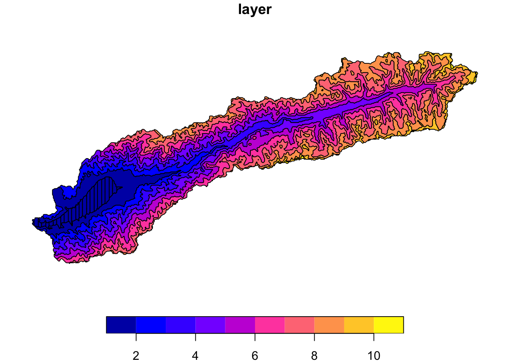

Information about the spatio-temporal distribution of precipitation (P) and temperature (T) is vital for water balance studies, including for hydrological modeling. Poorly gauged basins do not have dense enough ground-based monitoring network that would allow to obtain reliable meteorological fields that can be used to drive hydrological models. Station data are especially poor in complex and remote mountain catchments in developing and transition countries. The Central Asian river basins are examples of such basins. Global reanalysis data can help to cover these existing gaps and greatly inform and improve water balance assessments. In this Chapter, we show how this can be achieved.
Section 7.1 introduces a recent global daily precipitation and temperature climatology dataset of good quality in the Central Asia domain. The dataset covers the years 1979 until 2016. Section 7.2 then shows how to access, downscale and bias-correct the latest climate projections from the Coupled Model Intercomparison Project (CMIP6) in the context of hydrological modeling.
7.1 Historical Climate Data
7.1.1 CHELSA V21 High-Resolution Climate Data
To obtain information on past precipitation (P) and temperature (T) in the Central Asia region, we use the very high-resolution daily temperature climate product from CHELSA. CHELSA (Climatologies at high resolution for the earth’s land surface areas) is a global downscaled climate data set currently hosted by the Swiss Federal Institute for Forest, Snow and Landscape Research (WSL). It is built to provide free access to high resolution climate data for research and application, and is constantly updated and refined. CHELSA data are in the process of revolutionizing the field of hydrology in data-poor regions, among many other application domains.
CHELSA includes climate layers for various time periods and variables, ranging from the Last Glacial Maximum, to the present, to several future scenarios. CHELSA is based on a mechanistic statistical downscaling of global reanalysis data for the historical observations (hist_obs) or global circulation model output for future simulations (fut_sim) (see also www.chelsa-climate.org for more information). For more technical information, please consult the following document.
The historical observations for CHELSA precipitation and temperature are available from 1979 through 2016 for daily time steps and at 1 km resolution. These are derived from ERA-INTERIM reanalysis model outputs, among other things. ERA-INTERIM is a global atmospheric reanalysis product with a spatial resolution of 80 km, approximately. A good introduction about what a reanalysis product is can be found on this website.
Daily gridded precipitation fields are generated merging data from the ERA5 reanalysis precipitation and the MODIS monthly cloud cover. The CHELSA algorithm that is used for downscaling takes into account orographic predictors such as wind, topographic exposition and boundary layer height Karger et al. (2021). When compared with other products, the resulting data shows excellent performance, also in complex high mountain terrain. Temperature observations are available over the same period and are taken from (“CHELSA-W5e5 V1.0: W5e5 V1.0 Downscaled with CHELSA V2.0” 2022).
Warning
The data for the Central Asia domain (55 deg. E - 85 deg. E and 30 deg. N - 50 deg. N) is very large and is not provided here for download (total storage requirements > 1 TB). Please contact Tobias Siegfried via siegfried@hydrosolutions.ch for more information on how to obtain access the data of the entire domain.
The high-resolution climate data derived with the CHELSA algorithm is corrected for the problem of snow-undercatch in the high mountain regions as described by (Beck et al. 2020). What is snow-undercatch? Measuring precipitation correctly in high altitude regions is complex because of sublimation and blowing snow. An example of this is shown in Figure 7.1 for high elevation gauges in Spain. In a recent inter-comparison project carried out in Spain, it has been shown that undercatch poses significant problems in accurately measuring solid precipitation (Buisán et al. 2017) in mountainous regions. Both, ERA-INTERIM and CHELSA themselves assimilate station data in their models and hence are affected by these erroneous measurements.
Figure 7.1: Measured snow undercatch values in high-mountain stations in Spain. The values were determined within the World Meteorological Organization Solid Precipitation Intercomparison Experiment (WMO-SPICE). See text for more information and reference.
(Beck et al. 2020) has recognized this and released monthly correction factors that are taken into account in the CHELSA algorithm (see Figure 7.2).
Figure 7.2: Figure from (Beck et al. 2020), Supplementary Material. Plate d): Best estimate of global bias correction factors. Plate e): Lower bound estimate of global bias correction factors. Plate f): Upper bound of global bias correction factors. As is clearly visible, bias correction factors in high-mountain Asia, including the parts of Central Asia are significant.
The annual precipitation climatology, i.e. the long-term mean annual precipitation, from 1979 - 2011 is shown in Figure 7.3. As is easily visible and not further surprising, the mountainous regions receive the bulk of the precipitation, on average.
Figure 7.3: The CHELSA V21 Precipitation climatology in 6 large basins Central Asian basins is shown, including Amu Darya, Syr Darya, Talas River, Chu River, Issq Kul and Ily River is shown. Light blue colors indicate very little preciptiation whereas red colors indicate high annual norm precipitation amounts.
The following Figure 7.4 and Figure 7.5 show cold and warm season precipitation amounts. The cold season is defined to encompass the months October (previous year) - March (preceding year) whereas the warm season lasts from April through September.
Figure 7.4: The cold season precipitation climatology is shown. This Figure should also be compared with the the warm season precipitation climatology as shown in Figure 7.5.
Figure 7.5: The warm season precipitation climatology is shown. This Figure should also be compared with the the cold season precipitation climatology as shown in Figure 7.4.
Figure 7.4 shows that winter precipitation is mainly concentrated on the western fringes of the mountain ranges where moisture gets precipitated via westerly circulations and associated frontal systems. Compared to this, the main warm season precipitation locations move further to the east and to inner mountain range locations where summer convective storms cause this (see Figure 7.5).
The climatological data used to produce these Figures is available via this Dropbox link in the climate/chelsa_v21/climatologies/ sub-folder. There data over the historical observation period from 1981 - 2010 has been prepared for the norm annual and cold as well as warm season temperatures (tas_…) has been prepared. Similarly, data on precipitation (pr_…) and potential evapotranspiration (pet_…) is available and on the aridity index which is defined as \(\phi = PET/P\) where \(PET\) is the potential evapotranspiration climatology and \(P\) is the precipitation climatology.
Tip
Try it yourself! Download the data for the Central Asia domain here and visualize the climatologies for your case study catchment and extract mean statistics for the basins. As a reminder, the case study basins can be accessed via this link.
7.1.2 Assessment of CHELSA V21 Data Quality in a Sample Catchment
How can the quality of the CHELSA data in the complex Central Asia domain be assessed? With try to answer this question by looking at one of the case study basins provided as part of the Student Case Study Pack. Specifically, we want to answer the following questions for the Gunt River basin in the Pamir mountains:
does the magnitude of the precipitation yield physically meaningful results, and
does the climatology adequately reproduce the seasonal cycle observed one at the stations?
Long-term Annual Norm Discharge
Let us address the first question by investigating long-term norm CHELSA precipitation values and comparing these long-term norm values of the specific discharge of Gunt River. If \(P >Q\), where \(P\) is the long-term mean precipitation and \(Q\) is the long-term mean discharge, we can confidently say that the bias corrected CHELSA precipitation product is meaningful from a water balance perspective. The long-term water balance is simply
\[
Q = P - E
\tag{7.1}\]
where \(Q\) is the specific discharge [mm], \(P\) is the long-term mean precipitation [mm] and \(E\) is the long-term mean evapotranspiration \(E\) [mm] (see also the Chapter on Long-term water balance modeling for more information). Hence, if, over the long run, \(P>E\) and under the assumption that storage changes i.e. from glacier melt are not present, the water balance is valid and the product from that perspective validated.
We can compute the average long-term precipitation in the catchment in a simple way. The code block below shows how.
# load required librarieslibrary(tidyverse)library(lubridate)library(sf)library(exactextractr)library(raster)library(tmap)library(tmaptools)# load basin shapefile. note that if you want to replicate # the code below on your own computer, make sure that you # adjust the data paths accordingly, depending on where # you stored the downloaded data!basin_shp_path<-"../caham_data/AmuDarya/17050_Gunt/GIS/17050_basin_latlon.shp"basin_shp<-sf::st_read(basin_shp_path, quiet =TRUE)# load climatology and extract valuesp_clim_path<-"../caham_data/central_asia_domain/climate/chelsa_v21/climatologies/hist_obs/pr_chelsa_climatology_ann.tif"p_clim<-raster(p_clim_path)
Warning in showSRID(SRS_string, format = "PROJ", multiline = "NO", prefer_proj
= prefer_proj): Discarded ellps WGS 84 in Proj4 definition: +proj=longlat
+a=6378137 +rf=298.257223600004 +no_defs +type=crs
Warning in showSRID(SRS_string, format = "PROJ", multiline = "NO", prefer_proj =
prefer_proj): Discarded datum World Geodetic System 1984 in Proj4 definition
Figure 7.6: CHELSA precipitation climatology in Gunt River Basin. Note, the Figure is interactive and you can zoom in and out to see more details. The above code is shown to demonstrate the generation of such a Figure.
The mean norm precipitation can be easily computed as follows.
# extracting mean value over Gunt River basin. # note the resulting value is in mm.p_clim_mean<-p_clim%>%exact_extract(basin_shp,'mean')
Warning in .local(x, y, ...): Polygons transformed to raster CRS (EPSG:NA)
p_clim_mean
[1] 384.4959
We thus get 384 mm for the 30 year period from 1981 through 2010. Let us compare this to the long-term discharge at Gunt Khorog discharge station. For this, we load the corresponding data frame from which we extract the corresponding data.
# load discharge data from Gunt Khorog gauging station. note that if you want to replicate the code below on your own computer, make sure that you adjust the data paths accordingly, depending on where you stored the downloaded data!station_data<-readRDS("../caham_data/AmuDarya/17050_Gunt/GaugeData/17050_Q.Rds")# extract data for station 17050 and discharge between 1981 and 2010discharge_data_17050<-station_data%>%filter(type=="Q")%>%filter(code=="17050")%>%filter(date>=ymd("1981-01-01"))%>%filter(date<=ymd("2010-12-31"))# compute long-term dischargedischarge_data_17050_norm<-discharge_data_17050$data%>%mean(na.rm =TRUE)discharge_data_17050_norm
[1] 108.7257
For the long-term discharge at the station 17050, we thus get 109 m3/s. To compute the annual norm specific discharge, we need to compute the total discharge volume for a year and then divide by the total basin area.
Hence, for the period 1981 - 2010, we obtain for the specific discharge 250 mm. Clearly, \(Q<P\) and we can calculate that, on average, 2 parts of the total precipitation are discharged via the river whereas 1 part is evaporated without contribution to runoff at the gauge 17050 in Khorog town.
As an aside, the bias corrected precipitation climatology shows an interesting feature of the Gunt river basin (see Figure 7.6). Namely, there is a stark precipitation gradient between the western part of the basin where the bulk of the precipitation is observed and the hyper-arid Pamir plateau region to the east, where annual precipitation is below 200 mm at a mean altitude of above 4’000 meters above sea level [masl]. This place thus can be classified as alpine desert. This is an orographic effect as most of the moisture is washed out of the atmosphere before it enters the region of the plateau arriving from the westerly direction.
Discharge Seasonality
What about the seasonality of the CHELSA precipitation? Can it adequately reproduce the observed precipitation seasonality? If this would not be the case, we would have to reject the validity of the product and explore other high-resolution climatologies such as WorldClim V2 or CHPClim V1 (see (Beck et al. 2020) for more information on these products). Let us explore again the data of the Gunt River basin to answer this question.
First, we load and prepare all the required station precipitation and geospatial data. Then, we compute the monthly norms of these data for the period 1981-01-01 through 2010-12-31. Note that the meteorological station at Khorog is located at the same place as the discharge gauging station and has the 5-digit index 38954 (see also the dedicated Example Catchments Chapter for more information).
station_data<-readRDS("../caham_data/AmuDarya/17050_Gunt/GaugeData/17050_Q.Rds")# extract the precipitation data for station 17050 between 1981 and 2010pr_data_38954<-station_data%>%filter(type=="P")%>%filter(code=="38954")%>%filter(date>=ymd("1981-01-01"))%>%filter(date<=ymd("2010-12-31"))# add a month identifier to the dataframe and group by monthspr_data_38954<-pr_data_38954%>%mutate(month =month(date))%>%group_by(month)%>%dplyr::select(date, data, month)# compute monthly mean valuesp_monthly_mean_38954<-pr_data_38954%>%summarize(data =mean(data, na.rm =TRUE))%>%add_column(data_source ="Meteo Station 39954")# plot the resulting monthly time seriesp_monthly_mean_38954%>%ggplot(aes(x =month, y =data), color =data_source)+geom_line()+xlab("Month")+ylab("mm/month")+ggtitle("Monthly precipitation climatology from 1981 - 2010, Station 38954")
We can extract the mean monthly values from the CHELSA SpatRaster data and then compare it to station data.
Warning in .local(x, y, ...): Polygons transformed to raster CRS (EPSG:4326)
p_monthly_mean_CHELSA<-p_monthly_mean_38954p_monthly_mean_CHELSA$data<-p_monthly_mean_CHELSA_datap_monthly_mean_CHELSA$data_source<-"CHELSA"p_monthly_mean<-p_monthly_mean_38954%>%add_row(p_monthly_mean_CHELSA)# plot the resulting monthly time seriesp_monthly_mean%>%ggplot(aes(x =month, y =data, color =data_source))+geom_line()+xlab("Month")+ylab("mm/month")+ggtitle("Comparison of station and CHELSA precipitation climatologies")
Figure 7.7: ?(caption)
As is evident by looking at Figure 7.7, the CHELSA product can adequatly reproduce the seasonality of the local precipitation climatology and is only slightly overestimation absolute values. However, with regard to the later, this argument is not necessarily valied as we compare local point measurements with raster data with a resolution of 1 km2. A more thorow comparsion would generate an interpolated climatology field from station data and then compare these fields. However, as data is very scarce in this large basin, we do not have the means to perform such analysis.
EXERCISE
Try it yourself. Conduct the same analysis with the monthly temperature climatologies for the meteorological station and for the CHESLA data. You can very easily carry this out while reusing code blocks from above, also for any of the other basins available in the Case Study pack.
7.2 Climate Projections
The daily CHELSA V21 climate forcing data can be using for hydrological modeling from 1979 - 2010. But what about the future? After all, one of the main goals of this course book is to demonstrate how to use hydrological modeling to quantify future climate impacts in the Central Asian river basins. For this purpose, we will demonstrate in this Section how to download and process future climate data for studying hydrological changes.
Figure 7.8: The time arrow is shown point from left to the right. The availability of corresponding data is indicated for what we call the historical reference period (hist_…) and the future scenario period (fut_…).
To start with, we need to divide the total period of interest into a historic period and a future period. The historic period in Figure 7.8 is highlighted in orange color and ranges from 1979 through 2010. It is the period for which we have observed climate forcing data from the CHELSA dataset and gauge data available at the same time. As will be discussed in the Chapter on hydrological modeling, it is also the period which we use to calibrate and validate our hydrological model.
What we call the future period is highlighted by the blue arrow in Figure 7.8. Admittedly, the years from 2011 through 2022 are not in our current future (this edition of the book is written and published in 2022), so it really is just a matter of definition. It is this period over which we want to study climate impacts under different scenarios.
7.2.1 Global Circulation Models
These scenarios are describing different increasing greenhouse concentration pathways are are computed with large-scale numerical models called General Circulation Models or GCMs. They globally represent physical processes in the atmosphere, the oceans, the cryosphere and the land surface. GCMs compute geographically distributed and physically consistent estimate of regional climate change and thus are the key inputs to different types of impact analyses. A stylized schematic structure of a GCM is shown in Figure 7.9.
Figure 7.9: Schematic structure of a GCM model. Source: Penn State University, David Bice.
Figure 7.9 shows that GCMs discretize the atmosphere, ocean and land columns into a three dimensional grid with differing numbers of vertical layers that is a function of the model and the compartment under consideration (atmosphere, land, ocean). With a typical horizontal resolution between 250 km - 600 km, the spatial resolution of the GCMs is coarse relative to what is needed for detailed impact studies. Furthermore, many key physical processes such as cloud formation happen at sub-grid resolution. These can thus only indirectly be represented by a process called parameterization and it represents a major source of uncertainty in GCM-based future climate simulations. Furthermore, since every GCM model represents processes and feedback mechanisms in the model in a different way, there is also inter-model uncertainty where different models generate different climate responses despite the same scenario-based forcing. Being cognisant of these uncertainties is important in impact studies. For more information, see also this website.
For illustration, ?fig-comparison-chelsa-gcm-resolution shows the temperature fields for 01. January 1979 over the Central Asia domain as provided by the CHELSA V21 data set (left panel) and as computed by the GCM GFDL-ESM4 model under the historic run. Note that there is no particular reason why we choose this model, it is just to serve as an example here. The complete list of models which we use for the climate change impact analysis will be presented and discussed further below.
The difference in resolution is striking with the CHELSA data having having a horizontal resolution of 1 km, approx., and the GCM model having a resolution of 1.5 degrees x 1 degrees which corresponds to 166.5 km x 111 km on the equator, approximately. Why is GCM resolution so coarse? It is, simply put, limited by restricitions given by the computational power of the powerful super computers where these models are run on.
Figure 7.10: Comparison of CHELSA temperature climatology (left) and the GCM climate field of the historical run of the model GFDL-ESM4 (right).
Figure 7.11: Comparison of CHELSA temperature climatology (left) and the GCM climate field of the historical run of the model GFDL-ESM4 (right).
As is indicated in Figure 7.9, GCM runs from the historic period from 1979 through 2010 are also available. These historic GCM runs are very important as we shall see in a minute when it comes to bias correcting and downscaling GCM runs onto the spatial units of interest, i.e. hydrological response units (HRUs) in our case.
7.2.2 CMIP6 Climate Scenarios
What are the future scenarios that we are interest in? The global climate science community has worked hard under the within the Phase 6 of the Coupled Model Intercomparison Project (CMIP6) the define relevant future scenarios that are describing different climate forcing trajectories. The paper by (O’Neill et al. 2016) is the refernce source with regard to detailed descriptions of the scenarios. We are interested to cover and study a broad range of possible hydrological future states and thus select 4 distrinct shared socioeconomic pathway (SSP) scenarios that cover this entire possible range.
The SSPs are based on five narratives describing broad socioeconomic trends that possibly shape future society. These are intended to span the range of plausible futures. The narratives are (taken from (Riahi et al. 2017)):
SSP1 Sustainability – Taking the Green Road (Low challenges to mitigation and adaptation): The world shifts gradually, but pervasively, toward a more sustainable path, emphasizing more inclusive development that respects perceived environmental boundaries. Management of the global commons slowly improves, educational and health investments accelerate the demographic transition, and the emphasis on economic growth shifts toward a broader emphasis on human well-being. Driven by an increasing commitment to achieving development goals, inequality is reduced both across and within countries. Consumption is oriented toward low material growth and lower resource and energy intensity.
SSP2 Middle of the Road (Medium challenges to mitigation and adaptation): The world follows a path in which social, economic, and technological trends do not shift markedly from historical patterns. Development and income growth proceeds unevenly, with some countries making relatively good progress while others fall short of expectations. Global and national institutions work toward but make slow progress in achieving sustainable development goals. Environmental systems experience degradation, although there are some improvements and overall the intensity of resource and energy use declines. Global population growth is moderate and levels off in the second half of the century. Income inequality persists or improves only slowly and challenges to reducing vulnerability to societal and environmental changes remain.
SSP3 Regional Rivalry – A Rocky Road (High challenges to mitigation and adaptation): A resurgent nationalism, concerns about competitiveness and security, and regional conflicts push countries to increasingly focus on domestic or, at most, regional issues. Policies shift over time to become increasingly oriented toward national and regional security issues. Countries focus on achieving energy and food security goals within their own regions at the expense of broader-based development. Investments in education and technological development decline. Economic development is slow, consumption is material-intensive, and inequalities persist or worsen over time. Population growth is low in industrialized and high in developing countries. A low international priority for addressing environmental concerns leads to strong environmental degradation in some regions.
SSP4 Inequality – A Road Divided (Low challenges to mitigation, high challenges to adaptation): Highly unequal investments in human capital, combined with increasing disparities in economic opportunity and political power, lead to increasing inequalities and stratification both across and within countries. Over time, a gap widens between an internationally-connected society that contributes to knowledge- and capital-intensive sectors of the global economy, and a fragmented collection of lower-income, poorly educated societies that work in a labor intensive, low-tech economy. Social cohesion degrades and conflict and unrest become increasingly common. Technology development is high in the high-tech economy and sectors. The globally connected energy sector diversifies, with investments in both carbon-intensive fuels like coal and unconventional oil, but also low-carbon energy sources. Environmental policies focus on local issues around middle and high income areas.
SSP5 Fossil-fueled Development – Taking the Highway (High challenges to mitigation, low challenges to adaptation): This world places increasing faith in competitive markets, innovation and participatory societies to produce rapid technological progress and development of human capital as the path to sustainable development. Global markets are increasingly integrated. There are also strong investments in health, education, and institutions to enhance human and social capital. At the same time, the push for economic and social development is coupled with the exploitation of abundant fossil fuel resources and the adoption of resource and energy intensive lifestyles around the world. All these factors lead to rapid growth of the global economy, while global population peaks and declines in the 21st century. Local environmental problems like air pollution are successfully managed. There is faith in the ability to effectively manage social and ecological systems, including by geo-engineering if necessary.
Figure 7.12 shows the underlying population and GDP developments for the corresponding SSPs and Table 7.1 details about the forcing in these scenarios.
Figure 7.12: Global population and GDP developments under the CMIP6 shared socioeconomic pathways (taken from this source).
The description of the Tier 1 scenarios below that we are focussing on is taken from the aforementioned publication.
Table 7.1: Scenarios, their forcing category and the effective radiative forcing by the year 2100 (O’Neill et al. 2016).
Scenario
Forcing Category
2100 forcing [W/m2]
Shared Socioeconomic Pathway SSP5-8.5
High
8.5
Shared Socioeconomic Pathway SSP3-7.0
High
7
Shared Socioeconomic Pathway SSP2-4.5
Medium
4.5
Shared Socioeconomic Pathway SSP1-2.6
Low
2.6
For each scenario, we select 4 high priority GCM models for the preparation of downscaled climate forcings for the basins under consideration. The following Table 7.2 shows overview information about the models which are used in this course. Output of the GCM models shown in the table is available at daily timescales until 2100 and also for the historic runs.
Table 7.2: Model names, models and host institution where the GCM models have been developed.
Name
Model
Institution
GFDL-ESM4
gfdl- esm4
National Oceanic and Atmospheric Administration, Geophysical Fluid Dynamics Laboratory, Princeton, NJ 08540, USA
UKESM1-0-LL
ukesm1- 0-ll
Met Office Hadley Centre, Fitzroy Road, Exeter, Devon, EX1 3PB, UK
MPI-ESM1-2-HR
mpi- esm1-2- hr
Max Planck Institute for Meteorology, Hamburg 20146, Germany
IPSL-CM6A-LR
ipsl- cm6a-lr
Institut Pierre Simon Laplace, Paris 75252, France
MRI-ESM2-0
mri-esm2-0
Meteorological Research Institute, Tsukuba, Ibaraki 305-0052, Japan
GCM Model data can be downloaded from the climate store on the dedicated Copernicus website.
Important
Each GCM model is different from the others. Some model leap days, some don’t. Some assume that each month has 30 days, other don’t. The preprocessing steps required to make the outputs of these models is very time consuming and is not recommendened for beginners. Therefore, please download the pre-processed climate scenarios for the Central Asia domain from this online repository.
7.2.3 Downscaling and Bias Correction Using Quantile Mapping
GCM model data can be subject to systematic biases (e.g. Kotlarski et al. 2014) and their coarse resolution does not allow us to directly use these data in hydrological modeling studies. For this reason, a large number of downscaling and bias correction techniques have been developed, inclduing the well-known delta change method (see e.g. Feigenwinter et al. 2018 and references therein).
The daily CHELSA V21 data that became available in 2021, together with daily GCM data from CMIP6 now allows a relatively straight forward application of empirical quantile mapping to downscale to and statistically correct GCM for hydrological response units (HRUs).
Feigenwinter et al. (2018) explains clearly how empirical quantile mapping works. For the historical period (also called calibration period in the context of the discussion here), simulated model output (in our case, GCM hist_sim data, as shown in Figure 7.8) is corrected with a correction function towards an observational reference (here, the high-resolution CHELSA climatology) and systematic model biases are partly removed.
Figure 7.13: Overview on the bias correction approach: a bias correction function is calibrated by comparing raw climate model output to observations in a common historical reference period. The calibrated correction function is then applied to the entire raw model output in order to produce a bias-corrected time series out into the future scenario period (taken from (Feigenwinter et al. 2018)).
In a climate change context, the so-called correction function (or transfer function), established in the historical calibration period, can then be applied to the simulated future time series in order to produce bias-corrected scenario time series.
Figure 7.14: The nature of empirical quantile mapping is shown (source: (Feigenwinter et al. 2018)). Left panel: Example based on the probability density function (PDF). Right panel: example based on the cumulative distribution function (CDF).
Figure 7.14 explains the bias correction approach graphically. A biased simulated distribution (blue) is corrected towards an observed distribution (black). In the example shown the raw simulated distribution is subject to both a bias of the mean and a bias in variance. The resulting bias-corrected distribution (dashed red) approximates the observed one but is typically not identical to it (e.g. due to the sampling uncertainty during the calibration of the correction function or details of the specific quantile mapping implementation).
As we explained above, we investigate 4 climate scenarios (ssp126, ssp245, ssp 370 and ssp585) for which we have 4 GCM model runs each (GFDL-ESM4, UKESM1-0-LL, MPI-ESM1-2-HR and MRI-ESM2-0). Hence, we have 16 scenario-model combination and the same amounts of correction functions. The best way to achieve this is show the necessary steps by means of an example catchment. While each catchment is unique, the steps to pre-process and later export the corresponding climate files for modeling in RSMinerve are not and are thus generalizable.
The only caveat is that the processing of the CHELSA high-resolution climate files requires the very large raw files to be available locally. Due to the size of these files for the entire Central Asia domain, sharing these files is not easy and we are working on ways to make these files more readily available in the future so that they can be processes locally.
For the moment, each case study catchment in the student pack contains the precomputed climate files with which RSMinerve hydrological models can be run in a straight forward manner. These files are stored in the RS_Minerve folder. The following files are available:
hist_obs_rsm.csv: This is the .csv-files that contains the CHELSA V21 temperature and precipitation forcing for each of the elevation bands as specified in the /GIS/XXXXX_hru.shp file where XXXXX is the placeholder for the corresponding gauge code.
hist_sim_….csv: For the 4 climate models investigated, the simulated history is stored in these file. They are used for bias correction and not directly used in hydrological modeling.
fut_sim_….csv: We have generated 16 such files which consist of 4 climate scenarios for each of the 4 climate models. These are the future temperature and precipitation time series that were bias corrected using the quantile mapping method as explained above.
fut_sim_bcsd_….csv: These are the 16 final bias corrected and downscaled future climate forcing files. These are the .csv-files that are read into RSMinerve for the study of climate impacts on the river basin under consideration.
The processes of generating these files is shown in the following at the example of Chon Kemin catchment in Kyrgyzstan. For each catchment in the Students’ Case Study Pack, the code to process the files can be found in the corresponding CODE folder.
Then, we can simply configure the details of the catchment at hand (note the location installation dependent specification of paths!).
# Riverriver_name<-"ChonKemin"basin_name<-"Chu"# Gaugegauge_name<-'15149_gauge'gauge_code<-'15149'q_path<-"../caham_data/student_case_study_basins/15149_ChonKemin/GaugeData/"q_name<-paste0(gauge_code,"_Q.csv")data_type_Q<-"Q"units_Q<-"m3/s"# GIS #Important naming convention. We assume that GIS-files adhere to the following naming convention:#- Basin Shapefile: paste0(gauge_code,"_basin.shp")#- River Shapefile: paste0(gauge_code,"_river.shp")#- Junctions Shapefile: paste0(gauge_code,"_junctions.shp")#- HRU Shapefile: paste0(gauge_code,"_hru.shp")#- DEM Raster: paste0(gauge_code,"_dem.tif")gis_path<-"../caham_data/student_case_study_basins/15149_ChonKemin/GIS/"dem_file<-paste0(gauge_code,'_dem.tif')crs_project<-4326#latlon WGS84
There are a number of parameters to be set before the modeling which can be done as follows.
# Time zonetz<-"UTC"# GCM Climate Models and Simulations/Experiments and data pathshist_obs_dir<-"../../../../../../../../../../../../Documents/ca_large_files/CA_CLIMATE_PROJECTIONS/CHELSA_V21_1979_2018/"hist_sim_dir<-"../../../../central_asia_domain/climate/hist_sim/"fut_sim_dir<-"../../../../central_asia_domain/climate/fut_sim/"gcm_Models<-c("GFDL-ESM4", "IPSL-CM6A-LR", "MRI-ESM2-0", "UKESM1-0-LL")gcm_Scenarios<-c("ssp126", "ssp245", "ssp370", "ssp585")gcm_Models_Scenarios<-base::expand.grid(gcm_Models,gcm_Scenarios)%>%dplyr::mutate(model_scenario_combination =paste0(Var1,"_",Var2))%>%dplyr::select(model_scenario_combination)%>%unlist()%>%as.character()# Historical Observationshist_obs_start<-1979hist_obs_end<-2011hist_obs_dates<-riversCentralAsia::generateSeqDates(hist_obs_start,hist_obs_end,'day')hist_obs_dates<-as_date(hist_obs_dates$date)%>%as_tibble()%>%rename(Date =value)# Historical GCM Simulationshist_sim_start<-hist_obs_starthist_sim_end<-hist_obs_endhist_sim_dates<-hist_obs_dates# Future GCM Simulationsfut_sim_start<-2012fut_sim_end<-2099fut_sim_dates<-riversCentralAsia::generateSeqDates(fut_sim_start,fut_sim_end,'day')fut_sim_dates<-as_date(fut_sim_dates$date)%>%as_tibble()%>%rename(Date =value)# Climate Data Observation Frequencyobs_freq<-"day"# RSMinvervemodel_dir<-"../../RS_MINERVE/"## Dateshist_sim_dates<-hist_obs_datesfut_sim_dates<-riversCentralAsia::generateSeqDates(fut_sim_start,fut_sim_end,'day')fut_sim_dates<-as_date(fut_sim_dates$date)%>%as_tibble()%>%rename(Date =value)
IMPORTANT
Note that you would have to set the data_paths in the above code block according to your own local installation. However, since the CHELSA raster stack files are not available in the Students’ Case Study directory, the code here serves just as a demonstration. It should be further noted that this below is an advanced section that requires a good understanding of the R programming language.
After setting the parameters, we can generate the hydrological response units. As the adept reader realizes, we are creating the elevation bands in R/RStudio and do not resort to QGIS as has been shown in the previous Geospation Data Section.
# Parameter definition for the generation of the elevation bandsband_interval<-300# in meters. Note that normally you want to work with band intervals of 100 m to 200 m. To make the model less computationally demanding, we work with a coarser resolution of 300 m. holeSize_km2<-.1# cleaning holes smaller than that sizesmoothFact<-2# level of band smoothingdemAggFact<-2# dem aggregation factor (carefully fine-tune this)## Delineationhru_shp<-gen_basinElevationBands(gis_path,dem_file,demAggFact,band_interval,holeSize_km2,smoothFact)# Control outputhru_shp%>%plot()

In other words, the function gen_basinElevationBands() from the riversCentralAsia R Package creates elevation bands (HRUs) as per the parameter values. In the above example, we are generating elevation bands with a 300 meters [m] bands interval. The smaller this number, the higher the number of elevation bands that will be generated and the higher the computational requirements will be of the hydrological model.
As a next step, we intersect the subbasins with elevtion bands. In the example of Chon Kemin, the basin corresponds to the one subbasin.
In a final step, we add unique subbasin names and remove the shapefile fields that are no longer needed in the next steps. The plot shows the resulting shapefile.
The geometry of the hydrological modeling approach is now defined and we can start to extract and generate the climate forcing data. First, the historical observations (hist_obs) of temperature and precipitation for each HRU need to be defined. We show how this can be done in a straight forward manner using again helper functions from the riversCentralAsia package.
# Parametersclimate_data_type<-"hist_obs"# Load HRU shapefilesubbasins_hru_shp<-sf::st_read(paste0(gis_path,gauge_code,'_HRU','.shp'))# List CHELSA climate filesclimate_files_tas<-list.files(hist_obs_dir,pattern ="tas_",full.names =TRUE)climate_files_pr<-list.files(hist_obs_dir,pattern ="pr_",full.names =TRUE)# Restrict years rangen_years<-hist_obs_start:hist_obs_endclimate_files_tas<-climate_files_tas[1:length(n_years)]climate_files_pr<-climate_files_pr[1:length(n_years)]# Temperature data processingtemp_or_precip<-"Temperature"hist_obs_tas<-riversCentralAsia::gen_HRU_Climate_CSV_RSMinerve(climate_files_tas,
river_name,
temp_or_precip,
subbasins_hru_shp,
hist_obs_start,
hist_obs_end,
obs_freq,
climate_data_type,
crs_project)# Precipitation data processingtemp_or_precip<-"Precipitation"hist_obs_pr<-riversCentralAsia::gen_HRU_Climate_CSV_RSMinerve(climate_files_pr,
river_name,
temp_or_precip,
subbasins_hru_shp,
hist_obs_start,
hist_obs_end,
obs_freq,
climate_data_type,
crs_project)# Combine extract climate tibbles.hist_obs_rsm<-hist_obs_tas%>%add_column(hist_obs_pr%>%dplyr::select(-Station),.name_repair ='unique')# Add Discharge Data (monthly)q_dec<-riversCentralAsia::loadTabularData(q_path,
q_name,
gauge_code,
gauge_name,
river_name,
basin_name,
data_type_Q,
units_Q)func_type_lib<-list(mean ="Q")q_mon<-aggregate_to_monthly(q_dec,func_type_lib)q_mon<-q_mon%>%mutate(date =floor_date(as.POSIXct(.$date,tz =tz), unit ="day"))# Note, the function above outputs dates as date class. # This causes problems down the road. # We address these by converting the date values to dttm class.q_mon<-q_mon%>%dplyr::select(date, data)%>%dplyr::filter(date>=ymd(paste0(hist_obs_start, "-01-01")))%>%dplyr::filter(date<=ymd(paste0(hist_obs_end, "-12-31")))dates_char_Q<-riversCentralAsia::posixct2rsminerveChar(q_mon$date, tz ="UTC")%>%rename(Station =value)%>%tibble::add_column(Q =(q_mon$data%>%as.character))# Get gauge location and elevationgauge_shp<-sf::st_read(paste0(gis_path,gauge_code,"_gauge.shp"))dem<-raster::raster(paste0(gis_path,dem_file))gauge_coord<-gauge_shp%>%sf::st_coordinates()gauge_Z<-exactextractr::exact_extract(dem,gauge_shp,'mean')# Combine everythinghist_obs_rsm<-dplyr::full_join(hist_obs_rsm,dates_char_Q, by ='Station')# now finish off by giving the required attributes in the table for the discharge stationhist_obs_rsm$Q[1]=data_type_Qhist_obs_rsm$Q[2]=gauge_coord[1]hist_obs_rsm$Q[3]=gauge_coord[2]hist_obs_rsm$Q[4]=550hist_obs_rsm$Q[5]=data_type_Qhist_obs_rsm$Q[6]='Flow'hist_obs_rsm$Q[7]=units_Qhist_obs_rsm$Q[8]='Constant after'# Write final file to diskreadr::write_csv(hist_obs_rsm,paste0(model_dir,climate_data_type,"_rsm.csv"),na ="NA",col_names =FALSE)
The last line of code writes the result back to the disk. Please check in your Case Study Pack the folder /RS_MINERVE/ where the corresponding hist_obs_rsm.csv is stored. The file format corresponds to import requirements from the side of RSMinerve. You can open the text file either with a Spreadsheet program such as Excel or with a text editor. The daily time series of temperature, precipitation for each HRU and the discharge for the gauging station are stored in the columns with a header section. Since observed discharge data is only available on a monthly basis, the time series is filled with NA where there are no obervations available.
For the monthly mean discharge values, the following convention is adhered to. Monthly mean discharge values are written/stored in the first day of the month.
Next, we can process the historical GCM runs in a similar fashion.
The same applies to the future climate scenario runs.
climate_data_type<-"fut_sim"# Load HRU shapefilesubbasins_hru_shp<-sf::st_read(paste0(gis_path,gauge_code,'_HRU','.shp'))# Process and Extract GCM Model-Specific Datafut_sim_rsm<-base::vector(mode ="list", length =length(gcm_Models_Scenarios))names(fut_sim_rsm)<-gcm_Models_Scenarios# now we have a named listdebug_T<-fut_sim_rsmfor(idxGCMinseq(length(gcm_Models_Scenarios))){# GCM Model and Scenariostr2proc<-gcm_Models_Scenarios[idxGCM]gcm_model<-substr(str2proc, 1, nchar(str2proc)-7)gcm_scenario<-substr(str2proc, nchar(str2proc)-6+1, nchar(str2proc))# Process files - tastemp_or_precip<-"Temperature"climate_file_tas<-list.files(fut_sim_dir,pattern =paste0("tas_day_",gcm_Models_Scenarios[idxGCM]),full.names =TRUE)fut_sim_T<-gen_HRU_Climate_CSV_RSMinerve(climate_file_tas,
river_name,
temp_or_precip,
subbasins_hru_shp,
fut_sim_start,
fut_sim_end,
obs_freq,
climate_data_type,
crs_project)# Process files - prtemp_or_precip<-"Precipitation"climate_file_pr<-list.files(fut_sim_dir,pattern =paste0("pr_day_",gcm_Models_Scenarios[idxGCM]),full.names =TRUE)fut_sim_P<-gen_HRU_Climate_CSV_RSMinerve(climate_file_pr,
river_name,
temp_or_precip,
subbasins_hru_shp,
fut_sim_start,
fut_sim_end,
obs_freq,
climate_data_type,
crs_project)# Final dataframefut_sim_rsm[[idxGCM]]<-fut_sim_T%>%tibble::add_column(fut_sim_P%>%dplyr::select(-Station),.name_repair ='unique')# Write result to diskreadr::write_csv(fut_sim_rsm[[idxGCM]],
paste0(model_dir,climate_data_type,"_",gcm_model,"_",
gcm_scenario,"_",river_name,"_",fut_sim_start,"_",
fut_sim_end,".csv"),
col_names =FALSE)}
In a final step, we can produce the bias corrected future climate scenarios with the following code.
# Preparations## HRUssubbasins_hru_shp<-sf::st_read(paste0(gis_path,gauge_code,'_hru','.shp'))n_hru<-subbasins_hru_shp%>%nrow()hru_names<-subbasins_hru_shp$name# ================# Prepare hist_obs# ================climate_data_type<-"hist_obs"hist_obs_path<-paste0(model_dir,climate_data_type,"_rsm.csv")hist_obs_orig<-hist_obs_path%>%readr::read_csv(col_types =cols(.default =col_character()))%>%dplyr::select(-Station,-Q)# Extract data by groups and convert T to deg. Khist_obs_T<-hist_obs_orig[,1:n_hru]%>%slice(-1:-7)%>%type_convert()%>%mutate(across(.cols =everything(), ~.+273.15))hist_obs_P<-hist_obs_orig[, (n_hru+1):(2*n_hru)]%>%slice(-1:-7)%>%type_convert()# Fix row namesnames(hist_obs_T)<-hru_namesnames(hist_obs_P)<-hru_nameshist_obs_T_df<-hist_obs_T%>%as.data.frame()row.names(hist_obs_T_df)<-hist_obs_dates$Date%>%as.character()hist_obs_P_df<-hist_obs_P%>%as.data.frame()row.names(hist_obs_P_df)<-hist_obs_dates$Date%>%as.character()# ================# Prepare hist_sim# ================hist_sim_T_list<-base::vector(mode ="list", length =length(gcm_Models))hist_sim_P_list<-base::vector(mode ="list", length =length(gcm_Models))names(hist_sim_T_list)<-gcm_Models# now we have a named listnames(hist_sim_P_list)<-gcm_Models# now we have a named listfor(idxGCMin1:length(gcm_Models)){hist_sim_path<-list.files(model_dir,
pattern =paste0("hist_sim_",gcm_Models[idxGCM]),full.names =TRUE)hist_sim_orig<-hist_sim_path%>%readr::read_csv(col_types =cols(.default =col_character()))%>%dplyr::select(-Station)hist_sim_T<-hist_sim_orig[,1:n_hru]%>%slice(-1:-7)%>%type_convert()%>%mutate(across(.cols =everything(), ~.+273.15))hist_sim_P<-hist_sim_orig[,(n_hru+1):(2*n_hru)]%>%slice(-1:-7)%>%type.convert()# Fix row namesnames(hist_sim_T)<-hru_namesnames(hist_sim_P)<-hru_nameshist_sim_T_df<-hist_sim_T%>%as.data.frame()row.names(hist_sim_T_df)<-hist_sim_dates$Date%>%as.character()hist_sim_P_df<-hist_sim_P%>%as.data.frame()row.names(hist_sim_P_df)<-hist_sim_dates$Date%>%as.character()hist_sim_T_list[[idxGCM]]<-hist_sim_T_dfhist_sim_P_list[[idxGCM]]<-hist_sim_P_df}# ===============# Prepare fut_sim# ===============fut_sim_T_list<-base::vector(mode ="list", length =length(gcm_Models_Scenarios))fut_sim_P_list<-base::vector(mode ="list", length =length(gcm_Models_Scenarios))names(fut_sim_T_list)<-gcm_Models_Scenarios# now we have a named listnames(fut_sim_P_list)<-gcm_Models_Scenariosfut_sim_T_list_bcsd<-fut_sim_T_listfut_sim_P_list_bcsc<-fut_sim_P_listfor(idxGCMin1:length(gcm_Models_Scenarios)){fut_sim_orig_path<-list.files(model_dir,pattern =paste0("fut_sim_",gcm_Models_Scenarios[idxGCM]),full.names =TRUE)fut_sim_orig<-fut_sim_orig_path%>%readr::read_csv(col_types =cols(.default =col_character()))%>%dplyr::select(-Station)fut_sim_T<-fut_sim_orig[,1:n_hru]%>%slice(-1:-7)%>%type_convert()%>%mutate(across(.cols =everything(), ~.+273.15))fut_sim_P<-fut_sim_orig[,(n_hru+1):(2*n_hru)]%>%slice(-1:-7)%>%type.convert()# Fix row namesnames(fut_sim_T)<-hru_namesnames(fut_sim_P)<-hru_namesfut_sim_T_df<-fut_sim_T%>%as.data.frame()row.names(fut_sim_T_df)<-fut_sim_dates$Date%>%as.character()fut_sim_P_df<-fut_sim_P%>%as.data.frame()row.names(fut_sim_P_df)<-fut_sim_dates$Date%>%as.character()fut_sim_T_list[[idxGCM]]<-fut_sim_T_dffut_sim_P_list[[idxGCM]]<-fut_sim_P_df}# ===================# Do quantile mapping# ===================# --- Debuggingfut_sim_rsm_qmapped<-base::vector(mode ="list", length =length(gcm_Models_Scenarios))names(fut_sim_rsm_qmapped)<-gcm_Models_Scenarios# now we have a named list# -----for(idxGCMin1:length(gcm_Models_Scenarios)){# Preparationstr2proc<-gcm_Models_Scenarios[idxGCM]gcm_model<-substr(str2proc, 1, nchar(str2proc)-7)gcm_scenario<-substr(str2proc, nchar(str2proc)-6+1, nchar(str2proc))# Bias correctionhist_sim_T_df_gcmModel<-hist_sim_T_list[[gcm_model]]hist_sim_P_df_gcmModel<-hist_sim_P_list[[gcm_model]]fut_sim_T_df_gcmModel<-fut_sim_T_list[[idxGCM]]fut_sim_P_df_gcmModel<-fut_sim_P_list[[idxGCM]]qmap_param_T_gcm<-fitQmap(hist_obs_T_df, hist_sim_T_df_gcmModel, method ="QUANT")qmap_param_P_gcm<-fitQmap(hist_obs_P_df, hist_sim_P_df_gcmModel, method ="QUANT")# T bias correctionfut_sim_T_df_gcmModel_qmapped<-doQmap(fut_sim_T_df_gcmModel,qmap_param_T_gcm)# Fill 0s where present. Occasionally, there are 0s resulting from the quantile mapping these # are ironed out here by filling the missing values using the ones from the preceeding observation. fut_sim_T_df_gcmModel_qmapped[fut_sim_T_df_gcmModel_qmapped==0]<-NAfut_sim_T_df_gcmModel_qmapped<-zoo::na.locf(fut_sim_T_df_gcmModel_qmapped)# P bias correctionfut_sim_P_df_gcmModel_qmapped<-doQmap(fut_sim_P_df_gcmModel,qmap_param_P_gcm)# go back to tibble and convert back to deg. Cfut_sim_T_gcmModel_qmapped<-fut_sim_T_df_gcmModel_qmapped%>%as_tibble()%>%add_column(Date =fut_sim_dates$Date,.before =1)fut_sim_T_gcmModel_qmapped<-fut_sim_T_gcmModel_qmapped%>%mutate(across(-Date, ~.-273.15))fut_sim_P_gcmModel_qmapped<-fut_sim_P_df_gcmModel_qmapped%>%as_tibble()%>%add_column(Date =fut_sim_dates$Date,.before =1)fut_sim_T_list[[idxGCM]]<-fut_sim_T_gcmModel_qmappedfut_sim_P_list[[idxGCM]]<-fut_sim_P_gcmModel_qmapped# Export to .csv-filefut_sim_qmapped<-fut_sim_T_gcmModel_qmapped%>%#dplyr::select(-Date) %>% tibble::add_column(fut_sim_P_gcmModel_qmapped%>%dplyr::select(-Date),.name_repair ="universal")%>%mutate(across(.cols =everything(),~as.character(.)))%>%dplyr::select(-Date)# --- Debuggingfut_sim_rsm_qmapped[[idxGCM]]<-fut_sim_qmapped# ---fut_sim_orig_path<-list.files(model_dir,pattern =paste0("fut_sim_",gcm_Models_Scenarios[idxGCM]),
full.names =TRUE)fut_sim_orig<-fut_sim_orig_path%>%readr::read_csv(col_types =cols(.default =col_character()))fut_sim_orig_header<-fut_sim_orig%>%dplyr::select(-Station)%>%dplyr::slice(1:7,)fut_sim_qmapped<-fut_sim_orig_header%>%bind_rows(fut_sim_qmapped)%>%add_column(Station =fut_sim_orig$Station,.before =1)# Write result to diskclimate_data_type<-"fut_sim_bcsd"readr::write_csv(fut_sim_qmapped,
paste0(model_dir,climate_data_type,"_",gcm_model,"_",
gcm_scenario,"_",river_name,"_",fut_sim_start,"_",
fut_sim_end,".csv"),
col_names =FALSE)}
7.3 References
Beck, Hylke E., Eric F. Wood, Tim R. McVicar, Mauricio Zambrano-Bigiarini, Camila Alvarez-Garreton, Oscar M. Baez-Villanueva, Justin Sheffield, and Dirk N. Karger. 2020. “Bias Correction of Global High-Resolution Precipitation Climatologies Using Streamflow Observations from 9372 Catchments.”Journal of Climate 33 (4): 1299–1315. https://doi.org/10.1175/JCLI-D-19-0332.1.
Buisán, Samuel T., Michael E. Earle, José Luı́s Collado, John Kochendorfer, Javier Alastrué, Mareile Wolff, Craig D. Smith, and Juan I. López-Moreno. 2017. “Assessment of Snowfall Accumulation Underestimation by Tipping Bucket Gauges in the Spanish Operational Network.”Atmospheric Measurement Techniques 10 (3): 1079–91.
Feigenwinter, I., S. Kotlarski, A. Casanueva, A. M. Fischer, C. Schwierz, and M. A. Liniger. 2018. “Exploring Quantile Mapping as a Tool to Produce User-Tailored Climate Scenarios for Switzerland.” Technical Report 270. Federal Office of Meteorology; Climatology MeteoSwiss.
Karger, Dirk Nikolaus, Olaf Conrad, Jürgen Böhner, Tobias Kawohl, Holger Kreft, Rodrigo Wilber Soria-Auza, Niklaus E. Zimmermann, H. Peter Linder, and Michael Kessler. 2017. “Climatologies at high resolution for the earth’s land surface areas.”Scientific Data 4 (1): 170122. https://doi.org/10.1038/sdata.2017.122.
Karger, Dirk Nikolaus, Dirk R. Schmatz, Gabriel Dettling, and Niklaus E. Zimmermann. 2020. “High-resolution monthly precipitation and temperature time series from 2006 to 2100.”Scientific Data 7 (1): 248. https://doi.org/10.1038/s41597-020-00587-y.
Karger, Dirk Nikolaus, Adam M. Wilson, Colin Mahony, Niklaus E. Zimmermann, and Walter Jetz. 2021. “Global daily 1 km land surface precipitation based on cloud cover-informed downscaling.”Scientific Data 8 (1): 307. https://doi.org/10.1038/s41597-021-01084-6.
Kotlarski, S., K. Keuler, O. B. Christensen, A. Colette, M. Déqué, A. Gobiet, K. Goergen, et al. 2014. “Regional climate modeling on European scales: a joint standard evaluation of the EURO-CORDEX RCM ensemble.”Geoscientific Model Development 7 (4): 1297–1333. https://doi.org/10.5194/gmd-7-1297-2014.
O’Neill, Brian C., Claudia Tebaldi, Detlef P. van Vuuren, Veronika Eyring, Pierre Friedlingstein, George Hurtt, Reto Knutti, et al. 2016. “The Scenario Model Intercomparison Project (ScenarioMIP) for CMIP6.”Geoscientific Model Development 9 (9): 3461–82. https://doi.org/10.5194/gmd-9-3461-2016.
Riahi, Keywan, Detlef P. van Vuuren, Elmar Kriegler, Jae Edmonds, Brian C. O’Neill, Shinichiro Fujimori, Nico Bauer, et al. 2017. “The Shared Socioeconomic Pathways and their energy, land use, and greenhouse gas emissions implications: An overview.”Global Environmental Change 42: 153–68. https://doi.org/10.1016/j.gloenvcha.2016.05.009.